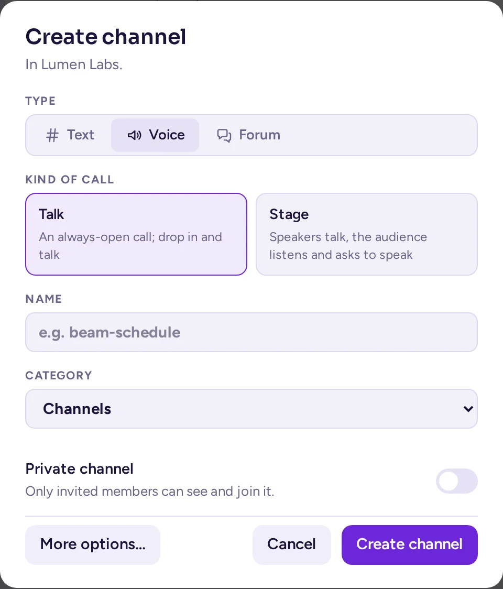
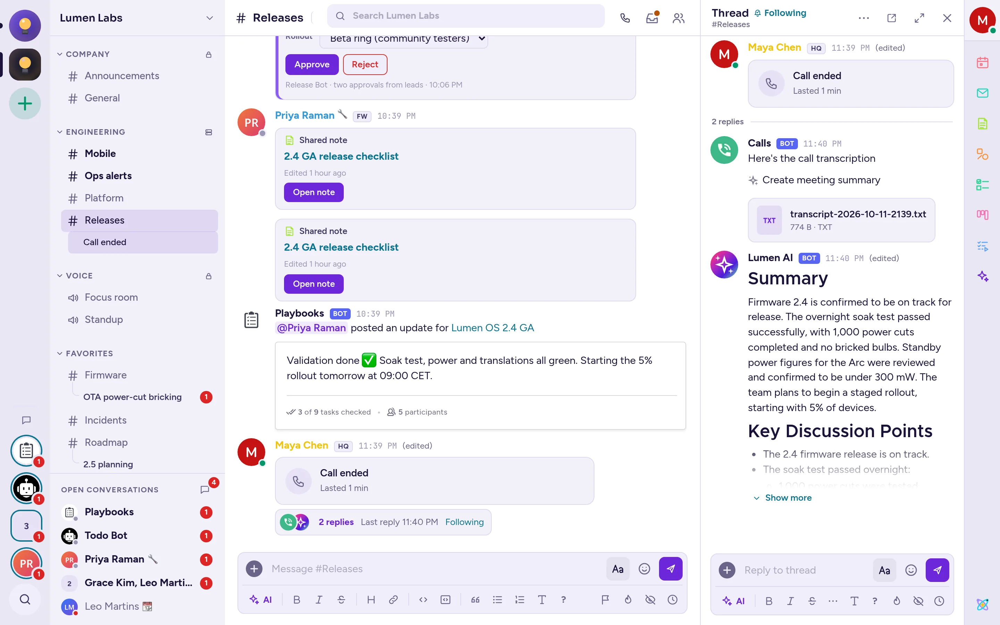

مکالمهها و صدا
مکالمهها و کانالهای صوتی، صدا، ویدیو و اشتراکگذاری صفحه را مستقیماً روی پورت اختصاصی سرور ارسال میکنند. این صفحه بخش شبکه، تنظیماتی که باید پس از نصب بررسی کنید، و متننویسی با مدلی که خودتان اجرا میکنید را پوشش میدهد.
مکالمهها چگونه کار میکنند
مکالمهها توسط برنامه مکالمهها (شناسه com.mattermost.calls) ارائه میشوند که بهطور پیشفرض نصب و فعال است. کانالهای صوتی (برنامه کانالهای صوتی، تصویر antimatter-next) اتاقهای مکالمه دائمی هستند که بر پایه مکالمهها ساخته شدهاند: برای کار کردن به فعال بودن مکالمهها نیاز دارند و از همان تنظیمات، پورتها و سرورها استفاده میکنند.
اپلیکیشن Calls یک سرور رسانه را درون Antimatter اجرا میکند. اپلیکیشن وب، اپلیکیشن دسکتاپ و اپلیکیشنهای موبایل با WebRTC به آن متصل میشوند:
- سیگنالینگ از طریق اتصال وب عادی (پروکسی HTTPS شما) انجام میشود؛
- رسانه (صدا، ویدیو، اشتراکگذاری صفحه) اینطور نیست: مستقیماً روی پورت مکالمه، بهطور پیشفرض 8443 UDP و TCP، به سرور ارسال میشود.
تنظیمات در کنسول سیستم › پلاگین ها › مکالمهها قرار دارند. هر یک از آنها همچنین میتواند با متغیر محیطی AM_CALLS_ در سرویس antimatter تنظیم شود که در این صورت بر کنسول سیستم اولویت دارد و تنظیمات را در آن قفل میکند. نامهای قدیمی MM_CALLS_ نیز کار میکنند.
پس از نصب این موارد را بررسی کنید
- پورت مکالمه را باز کنید. 8443/udp و 8443/tcp را در فایروال سرور و ارائهدهنده ابری خود مجاز کنید.
- حالت آزمایش را بررسی کنید. حالت آزمایش (
DefaultEnabled) بهطور پیشفرض خاموش است، بنابراین همه میتوانند مکالمهها را شروع کنند. برای اینکه فقط مدیران سیستم بتوانند در کانالها مکالمه شروع کنند تا از عملکرد صحیح مکالمهها اطمینان حاصل کنید، این گزینه را در کنسول سیستم › پلاگین ها › تماسها روی بر قرار دهید و پس از اطمینان، دوباره خاموش کنید. متغیر مربوطهAM_CALLS_DEFAULT_ENABLEDاست: مقدارtrueبه معنای خاموش بودن حالت آزمایش است. سرورهایی که از Mattermost مهاجرت کردهاند، انتخاب ذخیرهشده در پیکربندی خود را حفظ میکنند. - درباره ویدیو تصمیم بگیرید. فعالسازی ویدیو (
EnableVideo,AM_CALLS_ENABLE_VIDEO) بهطور پیشفرض روشن است: افراد میتوانند دوربین خود را در هر جایی که مکالمه فعال است روشن کنند، چه در پیامهای مستقیم و گروهی و چه در کانالها. در کانالهای صوتی، گزینه اجازه ویدیو در کانالهای صوتی در اپلیکیشن کانالهای صوتی تعیینکننده است. اگر این گزینه را خاموش کنید، هیچکس نمیتواند دوربین خود را روشن کند، حتی در کانالهای صوتی. - در پشت NAT، آدرس عمومی را تنظیم کنید (بخش بعدی).
مکانهایی که مکالمه فعال است
هر جامعه نوعی فضای کاری یا گیلد است (به گیلد یا فضای کاری مراجعه کنید). کانالی که مدیرانش مکالمات را روشن یا خاموش نکردهاند، از نوع جامعه خود پیروی میکند:
- در یک فضای کاری، کانالها از پیشفرض سرور پیروی میکنند: وقتی حالت آزمایش خاموش است، مکالمات برای همه روشن است؛
- در یک گیلد، مکالمات در کانالها خاموش است: افراد به جای آن در کانالهای صوتی صحبت میکنند. مدیران کانال و جامعه همچنان میتوانند مکالمات را در یک کانال روشن کنند.
تنظیم خاص هر کانال همیشه اولویت دارد. پیامهای مستقیم و گروهی به جامعهای تعلق ندارند: مکالمه در آنها تا زمانی که حالت آزمایش خاموش است، برای همه فعال است. تغییر نوع یک جامعه در کمتر از ۳۰ ثانیه روی مکالمهها اعمال میشود.
پورتها، NAT و STUN
| تنظیم | متغیر | مقدار پیشفرض |
|---|---|---|
| پورت سرور RTC (UDP) | AM_CALLS_UDP_SERVER_PORT | 8443 |
| پورت سرور RTC (TCP) | AM_CALLS_TCP_SERVER_PORT | 8443 |
| آدرس سرور RTC (UDP)، (TCP) | AM_CALLS_UDP_SERVER_ADDRESS, AM_CALLS_TCP_SERVER_ADDRESS | خالی: همه آدرسها |
| جایگزینی میزبان ICE | AM_CALLS_ICE_HOST_OVERRIDE | خالی: یافت میشود از طریق STUN |
| جایگزینی پورت میزبان ICE | AM_CALLS_ICE_HOST_PORT_OVERRIDE | خالی: پورت سرور |
| پیکربندیهای سرورهای ICE | AM_CALLS_ICE_SERVERS_CONFIGS | [{"urls":["stun:stun.cloudflare.com:3478"]}] |
| (آزمایشی) فعالسازی پشتیبانی از IPv6 | (کنسول سیستم) | خاموش |
پورتها باید بین 80 و 49151 باشند. با فایل compose سایت، CALLS_PORT را در .env تغییر دهید: این متغیر هر دو متغیر را تنظیم میکند و پورت را منتشر میکند، با همان شماره روی میزبان و در داخل کانتینر. کلاینتها ابتدا UDP را امتحان میکنند و در صورت عدم موفقیت، روی TCP در همان پورت بازمیگردند.
آدرسای که کلاینتها رسانه را به آن ارسال میکنند
سرور به هر کلاینت آدرس ارسال رسانه ("نامزد میزبان" آن) را اعلام میکند. بهطور پیشفرض، آدرس عمومی خود را با پرسش از یک سرور STUN، یک سرویس عمومی که آدرس و پورت مبدأ درخواست را پاسخ میدهد، کشف میکند. پیشفرض، سرور STUN عمومی Cloudflare است: stun:stun.cloudflare.com:3478. سرور تنها استفادهکننده از آن نیست: هر کلاینتی که به یک مکالمه میپیوندد نیز برای یافتن آدرس عمومی خود از آن پرسش میکند. سرور STUN تنها آدرسهای IP و پورتها را میبیند و هرگز صدای مکالمه، ویدیو یا پیامها را.
سروری که هنوز سرور STUN Mattermost (stun.global.calls.mattermost.com) را در پیکربندیهای سرورهای ICE ذخیره کرده است، برای مثال پس از مهاجرت از Mattermost، بهجای آن از Cloudflare استفاده میکند. تنظیمات ذخیرهشده تغییر نمیکنند.
آدرس را خودتان تنظیم کنید در صورتی که:
- سرور پشت NAT قرار دارد یا چندین آدرس عمومی دارد: جایگزینی میزبان ICE را به آدرس IP عمومی (یا نام دامنهای که به آن حل میشود) تنظیم کنید؛
- NAT یک پورت عمومی متفاوت را به 8443 نگاشت میکند: جایگزینی پورت میزبان ICE را نیز به آن پورت عمومی تنظیم کنید؛
- سرور به اینترنت دسترسی ندارد یا نمیخواهید سرور و کلاینتها با یک سرور STUN خارجی ارتباط برقرار کنند: جایگزینی میزبان ICE را تنظیم کنید و فهرست STUN را با
AM_CALLS_ICE_SERVERS_CONFIGS=[]خالی کنید. با تنظیم جایگزینی میزبان ICE، سرور دیگر از سرور STUN برای یافتن آدرس خود پرسش نمیکند؛ فهرست خالی کلاینتها را از پرسش از یک سرور STUN بازدارد.
services:
antimatter:
environment:
AM_CALLS_ICE_HOST_OVERRIDE: 203.0.113.10
AM_CALLS_ICE_SERVERS_CONFIGS: "[]"برای حفظ STUN بدون واسطه سوم، یک سرور STUN خودتان راهاندازی کنید (یک سرور TURN مانند coturn نیز به درخواستهای STUN پاسخ میدهد) و بهجای آن در پیکربندیهای سرورهای ICE فهرست کنید، همانطور که در مثال TURN زیر آمده است.
فقط در یک شبکه محلی، از آدرس LAN سرور استفاده کنید. پس از تغییر پورتها، آدرسها یا تنظیمات ICE، سرور را مجدداً راهاندازی کنید یا اپلیکیشن مکالمه را غیرفعال و فعال کنید: سرور رسانه هنگام شروع اپلیکیشن پیکربندی میشود.
TURN، برای فایروالهای سختگیرانه
برخی شبکهها هم UDP و هم اتصالات خروجی به پورتهای غیرمعمول TCP را مسدود میکنند. افرادی که در این شبکهها هستند به یک سرور TURN نیاز دارند که رسانه را از طریق پورتی که میتوانند به آن دسترسی داشته باشند (معمولاً 443) منتقل کند. Antimatter چنین سروری را در خود ندارد؛ یک سرور TURN مانند coturn را اجرا کنید و آن را به ICE Servers Configurations اضافه کنید که یک فهرست JSON است:
[
{"urls": ["stun:turn.example.com:3478"]},
{"urls": ["turn:turn.example.com:3478?transport=udp", "turns:turn.example.com:443?transport=tcp"]}
]- با استفاده از یک راز مشترک (
use-auth-secretدر coturn)، همان راز را در TURN Static Auth Secret (AM_CALLS_TURN_STATIC_AUTH_SECRET) قرار دهید: سرور به هر مشتری (client) اعتبارنامههای کوتاهمدت میدهد که برای مدت TURN Credentials Expiration (minutes) (بهطور پیشفرض 240 دقیقه) معتبر هستند. - با اعتبارنامههای ثابت، بهجای آن،
"username"و"credential"را به ورودی TURN اضافه کنید. - Server Side TURN (بهطور پیشفرض غیرفعال) همچنین از سرورهای TURN برای اتصالاتی که سرور آنها را آغاز میکند استفاده میکند.
تنظیمات دیگر مکالمه
| تنظیم | متغیر | مقدار پیشفرض | عملکرد |
|---|---|---|---|
| حداکثر شرکتکنندگان در مکالمه | AM_CALLS_MAX_CALL_PARTICIPANTS | 0 (بدون محدودیت) | بیشترین تعداد افراد در یک مکالمه. |
| اجازه اشتراکگذاری صفحه | (کنسول سیستم) | روشن | به شرکتکنندگان اجازه میدهد صفحه خود را به اشتراک بگذارند. |
| فعالسازی زنگ مکالمه | AM_CALLS_ENABLE_RINGING | روشن | وقتی مکالمهای در یک پیام مستقیم یا گروهی آغاز میشود، برای سایر افراد آن پیام زنگ میخورد. |
| فعالسازی simulcast برای اشتراکگذاری صفحه (آزمایشی) | (کنسول سیستم) | خاموش | اشتراکگذاری صفحه را با چند کیفیت مختلف ارسال میکند. |
| فعالسازی کدک AV1 برای اشتراکگذاری صفحه (آزمایشی) | (کنسول سیستم) | خاموش | در حالی که simulcast فعال است، نادیده گرفته میشود. |
اپلیکیشن کانالهای صوتی دو تنظیم دارد، در کنسول سیستم › پلاگین ها › کانالهای صوتی: هنگام باز کردن یک کانال صوتی، پیوستن (به صورت پیشفرض روشن) و اجازه ویدیو در کانالهای صوتی (به صورت پیشفرض روشن، اما ویدیوی بالا را ببینید). صدا یک نوع کانال است که هنگام ایجاد کانال انتخاب میشود (به ایجاد یک کانال مراجعه کنید)؛ هیچ مرحله بعدی برای «تبدیل به کانال صوتی» وجود ندارد. این دو تنظیم همچنان برای هر کانال صوتی اعمال میشوند. ایجاد یک کانال صوتی نیازمند فعال بودن اپلیکیشن کانالهای صوتی است؛ بدون آن، گزینه صدا در دیالوگ ایجاد کانال غیرفعال است.

AM_CALLS_DISABLE=true را تنظیم کنید. در این صورت کانالهای صوتی نیز از کار میافتند.سرورهای بزرگتر: یک rtcd خارجی
بهطور پیشفرض، یک سرور Antimatter تمام رسانههای مکالمه را بر عهده میگیرد. برای مکالمات همزمان متعدد یا برای نگهداشتن رسانهها خارج از سرور چت، اپلیکیشن Calls میتواند رسانهها را به rtcd بسپارد؛ یک سرور رسانهای مجزا (rtcd متنباز Mattermost، نسخه 0.17 یا جدیدتر). RTCD service URL (AM_CALLS_RTCD_SERVICE_URL) را تنظیم کنید، برای مثال https://rtcd.example.com: در این صورت همه مکالمات از طریق آن انجام میشوند و کلاینتها رسانههای خود را به پورت اختصاصی rtcd میفرستند، نه به پورت Antimatter. میتوانید با AM_CALLS_RTCD_CLIENT_ID و AM_CALLS_RTCD_AUTH_KEY اطلاعات احراز هویت را ارائه دهید؛ در صورت عدم ارائه، اپلیکیشن خود را در rtcd ثبت میکند. هیچ لایسنسی لازم نیست. اپلیکیشن Calls به مدیران، زمانی که سرور اغلب بیش از ۵۰ نفر را همزمان در مکالمه داشته باشد، هشدار میدهد و استفاده از rtcd را توصیه میکند.
متننویسی و زیرنویس زنده
Antimatter میتواند مکالمات را با استفاده از یک مدل تبدیل گفتار به متن که خودتان اجرا میکنید، متننویسی کند و در حالی که افراد صحبت میکنند، زیرنویس زنده نمایش دهد. Antimatter از هر سروری که یک نقطه پایانی /v1/audio/transcriptions سازگار با OpenAI ارائه میدهد، مانند یک سرور Whisper در شبکه شما، استفاده میکند. هیچ سرویس اضافی از Antimatter لازم نیست.
نحوه عملکرد
- میزبان یک مکالمه متننویسی را با متننویسی مکالمه در کنترلهای مکالمه شروع میکند. نشان در حال متننویسی به همه اطلاع میدهد.
- اپلیکیشن هر شرکتکننده به میکروفون خودش گوش میدهد، گفتار را به قطعات کوتاه (تا ۱۲ ثانیه، هرگز در حالت بیصدا) تقسیم میکند و آنها را به Antimatter ارسال میکند که آنها را به سرور تبدیل گفتار به متن شما فوروارد میکند.
- با فعال بودن زیرنویس زنده، متن هر قطعه فوراً بهعنوان زیرنویس برای شرکتکنندگان نمایش داده میشود.
- وقتی متننویسی متوقف میشود یا مکالمه به پایان میرسد، ربات مکالمه متن مکالمه را بهصورت یک فایل متنی و یک فایل زیرنویس WebVTT در رشته مکالمه (در کانالهای صوتی، در کانال) منتشر میکند.
- با روشن بودن خلاصهسازی متننویسیها، عامل پیشفرض اپلیکیشن چت هوش مصنوعی نیز خلاصهای را در رشته پست میکند (به هوش مصنوعی مراجعه کنید).

راهاندازی
این موارد را در سرویس antimatter تنظیم کنید:
services:
antimatter:
environment:
AM_CALLS_ENABLE_TRANSCRIPTIONS: "true"
AM_CALLS_TRANSCRIBE_API: openai
AM_CALLS_TRANSCRIBE_API_OPEN_AIURL: http://stt.internal:8000/v1
AM_CALLS_TRANSCRIBE_API_OPEN_AI_MODEL: whisper-1
AM_CALLS_TRANSCRIBE_API_OPEN_AI_KEY: ""
AM_CALLS_ENABLE_LIVE_CAPTIONS: "true"
AM_CALLS_LIVE_CAPTIONS_LANGUAGE: en| تنظیم | متغیر | چه چیزی وارد کنید |
|---|---|---|
| Enable call transcriptions (Beta) | AM_CALLS_ENABLE_TRANSCRIPTIONS | true |
| Call transcriber API | AM_CALLS_TRANSCRIBE_API | openai (بهصورت "OpenAI-compatible API (no job service)") نمایش داده میشود |
| Speech-to-text API URL | AM_CALLS_TRANSCRIBE_API_OPEN_AIURL | آدرس پایه API، تا و شامل /v1. |
| Speech-to-text model | AM_CALLS_TRANSCRIBE_API_OPEN_AI_MODEL | نام مدل همانطور که API آن را میشناسد، برای مثال whisper-1. الزامی است. |
| Speech-to-text API key | AM_CALLS_TRANSCRIBE_API_OPEN_AI_KEY | بهعنوان توکن bearer ارسال میشود. اگر API به آن نیازی ندارد، آن را خالی بگذارید. |
| فعالسازی زیرنویس زنده (نسخه آزمایشی) | AM_CALLS_ENABLE_LIVE_CAPTIONS | true برای نمایش زیرنویسها در حین مکالمه. |
| زبان زیرنویس زنده | AM_CALLS_LIVE_CAPTIONS_LANGUAGE | زبان گفتاری، بهصورت یک کد دو حرفی (بهطور پیشفرض en). این کد برای تولید متننویسی نیز به API تبدیل گفتار به متن ارسال میشود، بنابراین حتی اگر زیرنویس فعال نباشد، آن را تنظیم کنید. |
| خلاصهسازی متننویسیها | AM_CALLS_SUMMARIZE_TRANSCRIPTIONS | true برای دریافت یک خلاصه هوش مصنوعی پس از پایان مکالمه. |
openai روشن نکنید؛ در غیر این صورت، شروع ضبط، شروع متننویس job-service را نیز درخواست میکند که با خطا مواجه میشود.صوت همه افرادی که در حین فعال بودن متننویسی صحبت میکنند، به سرور تبدیل گفتار به متن که شما پیکربندی کردهاید ارسال میشود و متننویسی در جایی منتشر میشود که همه اعضای کانال میتوانند آن را بخوانند. این موضوع را به کاربران خود اطلاع دهید و اگر مکالمات محرمانه هستند، این سرور را در شبکه داخلی خود نگه دارید.
ضبطها
ضبط مکالمهها (و متننویسی با whisper.cpp یا متننویسهای Azure) در کانتینرهای جداگانهای اجرا میشود که توسط یک سرویس وظیفه، calls-offloader با سورس باز Mattermost، راهاندازی میشوند؛ شما باید این سرویس را در کنار Antimatter خود پیادهسازی کنید. تنظیمات مربوطه عبارتند از Enable call recordings (AM_CALLS_ENABLE_RECORDINGS، بهطور پیشفرض غیرفعال)، Job service URL (AM_CALLS_JOB_SERVICE_URL)، Maximum call recording duration (بهطور پیشفرض ۶۰ دقیقه، از ۱۵ تا ۱۸۰ دقیقه) و Call recording quality (پایین، متوسط یا بالا؛ بهطور پیشفرض متوسط). برای این کار به هیچ لایسنسی نیاز نیست. پس از فعالسازی ضبط، میزبان مکالمه با استفاده از Record the call در کنترلهای مکالمه، ضبط را آغاز و پایان میدهد؛ همهی حاضران در مکالمه میبینند که مکالمه ضبط شده است و پس از پایان ضبط، فایل ضبطشده در رشتهی مربوط به آن مکالمه منتشر میشود. مکالمههای در کانالهای صوتی رشتهای ندارند، بنابراین امکان ضبط آنها وجود ندارد. اگر فقط به متننویسی و زیرنویس نیاز دارید، تنظیمات تبدیل گفتار به متن در بخش قبل سادهتر است: این روش به سرویس وظیفه نیاز ندارد.